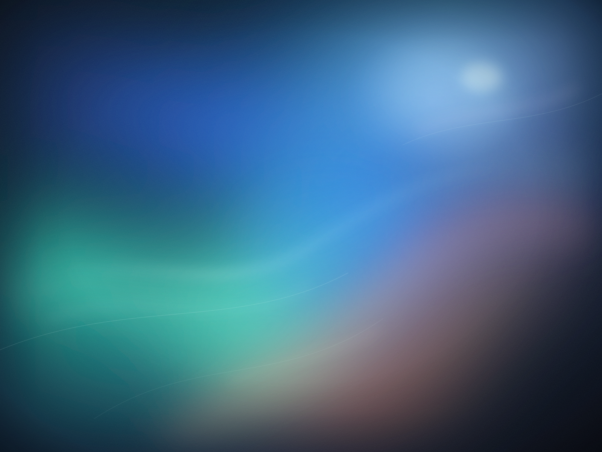
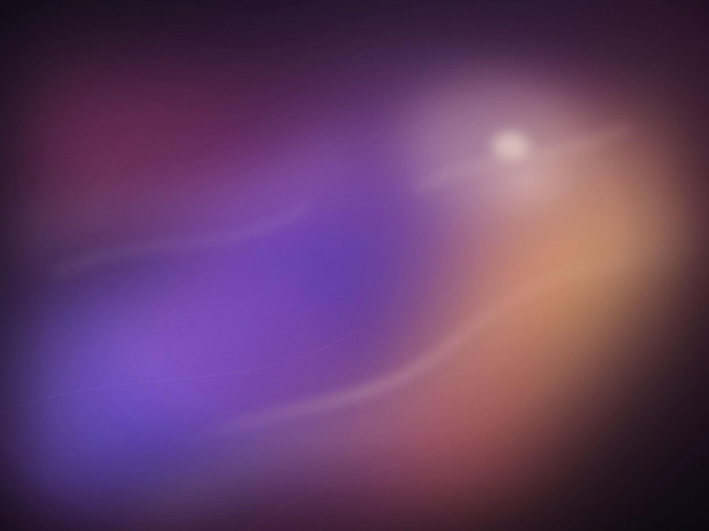

折射
背景不是被遮住，而是被重新弯折。
光有了厚度，边缘学会折射。轻触唤醒，进入一块可以亲手操作的液态玻璃桌面。

背景不是被遮住，而是被重新弯折。
光不贴在表面，它跟着你走。
每一次按下，都有重量和回声。
切换场景，拖动参数。你调的不是滤镜，是光线穿过玻璃时的速度、方向，与温度。
所有画面都在你的浏览器里实时生成，没有数据离开此页。

21:04
11月11日 · 星期二 · 上海
光会跟着你走 · 这块玻璃是活的
按钮会呼吸，开关有阻尼，滑杆像水面，标签栏会滑向你的选择。界面的温度，藏在这些不被注意的瞬间里。
靠近时，它会向你倾一点。按下的瞬间，玻璃沿着指针的方向延展，像水面接住一滴光。
按住，看它被拉长
它不是滑过去，而是被拉过去。按住时变长，松手后再轻轻回弹，像一小块被推开的水面。
你摸到的不是圆点，是一小片有重量的水。轨道上的光，会跟着你走到最后。
高光沿着边缘游走，像一束刚刚好的顶光。
背景在玻璃边缘弯折，轮廓开始有了弧度。
模糊没有抹掉颜色，它只是让光慢了下来。
点击，或用方向键切换
选中的那块玻璃会滑过去。不是替换，是连续；不是切换，是流动。
如果这一页让你多停留了一秒，那么同一层光，也可能让访客为你的品牌多停留一秒。
液态玻璃不是装饰，它是一种让人愿意靠近的方式。